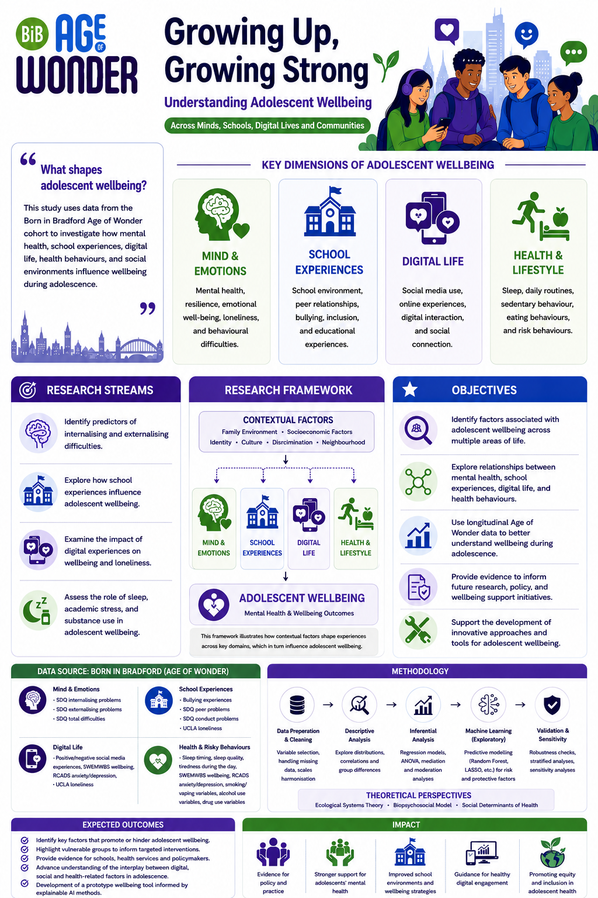

🧠
Verity Zaffar
Internalising & Externalising Difficulties
Investigating predictors of internalising and externalising difficulties in adolescents using explainable machine learning.
LinkedInA collaborative research programme bringing together four interconnected studies to better understand adolescent wellbeing.
Exploring mental health, school experiences, digital life, health behaviours, and social environments using Age of Wonder cohort data.

A brief summary of the research programme and its purpose.
Adolescence is a critical stage of development, shaped by a range of psychological, social, behavioural, and environmental influences. This project brings together four complementary research studies using data from the Born in Bradford Age of Wonder cohort to explore factors associated with adolescent wellbeing. By examining experiences across different areas of young people's lives, the programme aims to contribute to a broader understanding of wellbeing during adolescence and generate evidence to inform future research, policy, and support initiatives.
Four separate researchers are contributing interconnected studies to the wider adolescent wellbeing programme.
Internalising & Externalising Difficulties
Investigating predictors of internalising and externalising difficulties in adolescents using explainable machine learning.
LinkedInSchool Experiences & Wellbeing
Exploring how school experiences, including engagement, belonging, and peer relationships, influence adolescent well-being. The research examines the role of educational environments in shaping well-being outcomes during adolescence.
LinkedInDigital Experiences, Wellbeing & Loneliness
Examining how digital experiences and online interactions relate to adolescent wellbeing and feelings of loneliness. The study seeks to better understand the opportunities and challenges presented by an increasingly connected world.
LinkedInSleep, Academic Stress & Substance Use
Assessing the role of sleep duration, bedtime timing, academic stress, and substance use in adolescent mental wellbeing. The research considers how health-related behaviours may shape wellbeing during adolescence.
LinkedInUse this section for the conference poster PDF and any supporting materials.
Use the LinkedIn buttons above to connect with each researcher. Replace the placeholder links when each researcher confirms their profile URL.
Meet the Researchers